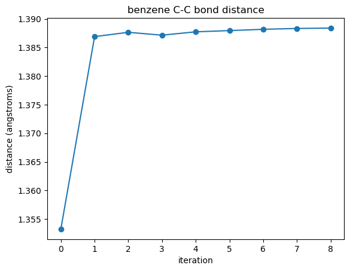
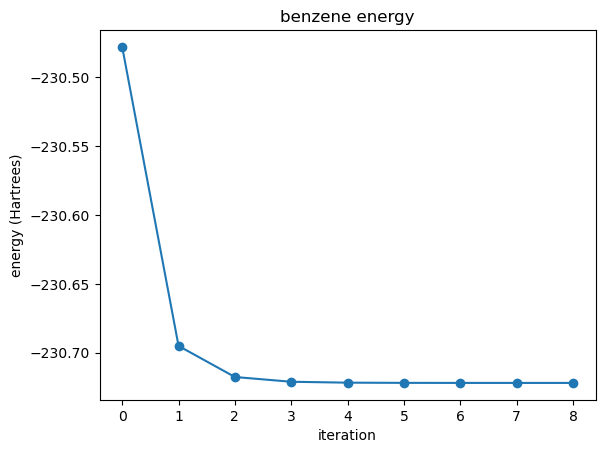
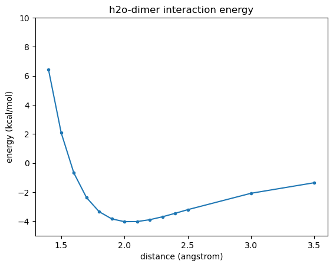
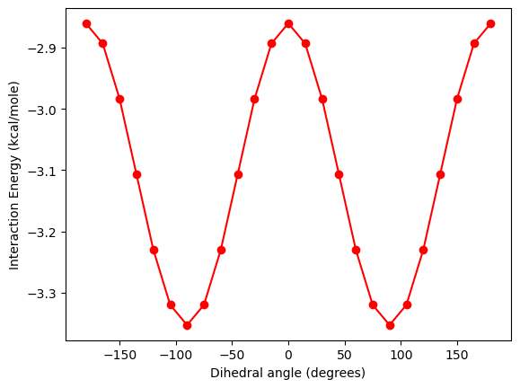
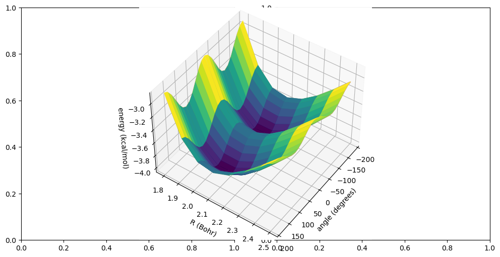

Notes#
Course https://molssi.org/learn-quantum-chemistry-simulation-with-molssis-new-credentialed-online-course/
Tutorials https://education.molssi.org/resources.html#molecular-modeling
https://github.com/DocMinus/psi4_rdkit
### Use PSI4
# from https://education.molssi.org/qm-tools/aio.html
import psi4
# import the python modules that we will use
import psi4
import numpy as np
#%matplotlib inline
import matplotlib.pyplot as plt
# function to find the bond distance for two specific atoms in the optimization file
def plot_R(filename, a, b):
"""
Function to measure the distance between two atoms in a psi4 geometry optimization output file
Usage: plot_R(filename, a, b)
Inputs:
filename: name of psi4 output file from geometry optimization calclaultion
a and b: atom numbers for two atoms you want to measure the distance between
Output: list of bond distance at for each optimization step
"""
# OLD CODE: NEEDED EDITING. HAD MANY ERRORS. HAS THE OUTPUT FILE FORMAT CHANGED?
# with open(filename) as f:
# pair_notation = 'R(' + str(a) + ',' + str(b) + ')'
# print(pair_notation)
# rows_with_R_pairs = [line.split() for line in f if line.find(pair_notation) > 1 and
# line.strip().split()[1].startswith(pair_notation)]
# print(rows_with_R_pairs)
# bond_distances = []
# bond_distances.append(float(rows_with_R_pairs[0][3]))
# for item in rows_with_R_pairs:
# bond_distances.append(float(item[6]))
# return bond_distances
with open(filename) as f:
pair_notation = 'R(' + str(a) + ',' + str(b) + ')'
rows_with_R_pairs = [line.split() for line in f if line.find(pair_notation) > 0 and
line.strip().split()[0].startswith(pair_notation) and
line.strip().split()[1] == '=']
bond_distances = []
for item in rows_with_R_pairs:
# print(item)
bond_distances.append(float(item[3]))
return bond_distances
# function to find the energy in the optimization file
def plot_energy(filename):
"""
Function to find the energy in a psi4 optimization file.
Usage: plot_energy(filename)
Inputs: name of psi4 output file from geometry optimization calclaultion
filename: name
Output: list of energy values from each optimization step
"""
with open(filename) as f:
energy_string = 'Final Energy'
# energy_values = [ float(line.split()[3]) for line in f if line.strip().startswith(energy_string) ]
energy_values = [ float(line.split()[3]) for line in f if energy_string in line.strip()]
return energy_values
# set the amount of memory that you will need
psi4.set_memory('2 GB')
# set the number of threads (processes) for Psi4 to use
# (~all modern computers can handle 2 threads)
psi4.set_num_threads(2)
# set the molecule name for your files and plots
molecule_name = "benzene"
# enter the charge, multiplicity, and starting coordinates of the atoms in your molecule
benzene = psi4.geometry("""
0 1
C -3.98116 3.81771 0.00000
C -2.63351 3.75967 0.10838
C -2.11978 2.80187 -0.29323
C -2.68901 1.83558 -0.80805
C -3.92704 1.83138 -0.93484
C -4.58021 2.71451 -0.58263
H -4.52562 4.63006 0.32966
H -2.09025 4.53029 0.52795
H -1.09209 2.75239 -0.21305
H -2.13621 1.02769 -1.13476
H -4.38300 1.01321 -1.36811
H -5.60487 2.68217 -0.70124
""")
# Set the name of the output file for the initial energy calculation
# Calculate the initial energy of the molecule using the Hartree-Fock method
# and the cc-pVDZ basis set and print the output to a file
psi4.set_output_file(F'{molecule_name}_energy_initial.dat', False)
psi4.energy('scf/cc-pVDZ')
# Set the name of the output file to write the geometry information
# Print atomic coordinates and interatomic distances to this file
psi4.set_output_file(F'{molecule_name}_geometry_initial.dat', False)
benzene.print_out_in_angstrom()
benzene.print_distances()
# psi4.set_module_options('scf', {'maxiter': 500})
# psi4.set_options({'geom_maxiter': 100})
# optimize the molecular geometry
psi4.set_output_file(F'{molecule_name}_geometry_optimization.dat', False)
psi4.optimize('scf/cc-pVDZ', molecule=benzene)
# print the optimized atomic coordinates and interatomic distances
psi4.set_output_file(F'{molecule_name}_geometry_final.dat', False)
benzene.print_out_in_angstrom()
benzene.print_distances()
Optimizer: Optimization complete!
plot_R('benzene_geometry_optimization.dat',1,2)
[1.353246,
1.3869,
1.387652,
1.387151,
1.387738,
1.38795,
1.388175,
1.388323,
1.388392]
# find the bond distance for atoms C1 and C2
bond_distances = plot_R('benzene_geometry_optimization.dat',1,2)
# plot the bond distances at each iteration of geometry optimization
plt.plot(bond_distances,'o-')
plt.xlabel('iteration')
plt.ylabel('distance (angstroms)')
plt.title(molecule_name + ' C-C bond distance')
plt.show()

plot_energy('benzene_geometry_optimization.dat')
[-230.47781611773024,
-230.6950542938673,
-230.71763013180896,
-230.72108252286387,
-230.72173925789497,
-230.72188283722775,
-230.72192241239617,
-230.72192541256942,
-230.72192577420492]
# find the energies from this optimization file
energy_values = plot_energy('benzene_geometry_optimization.dat')
# plot the energies at each iteration
plt.figure()
plt.plot(energy_values,'o-')
plt.xlabel("iteration")
plt.ylabel("energy (Hartrees)")
plt.title(F'{molecule_name} energy')
#plt.ylim(min(energy_values), energy_values[0])
plt.show()

Visualize#
# set the amount of memory that you will need
psi4.set_memory('2 GB')
# set the number of threads (processes) for Psi4 to use
# (~all modern computers can handle 2 threads)
psi4.set_num_threads(2)
# set the molecule name for your files and plots
molecule_name = "benzene"
# enter the charge, multiplicity, and starting coordinates of the atoms in your molecule
xyz = ("""
0 1
C -3.98116 3.81771 0.00000
C -2.63351 3.75967 0.10838
C -2.11978 2.80187 -0.29323
C -2.68901 1.83558 -0.80805
C -3.92704 1.83138 -0.93484
C -4.58021 2.71451 -0.58263
H -4.52562 4.63006 0.32966
H -2.09025 4.53029 0.52795
H -1.09209 2.75239 -0.21305
H -2.13621 1.02769 -1.13476
H -4.38300 1.01321 -1.36811
H -5.60487 2.68217 -0.70124
""")
psi4.set_output_file(F'{molecule_name}_trial_wfn.dat', False)
benzene = psi4.geometry(xyz)
benzene.update_geometry()
benzene.print_out() # print the geometry to the output file with atomic masses
energy, wave_function = psi4.optimize(
'hf/6-31g*',
return_wfn =True,
molecule=benzene
)
benzene.print_out_in_angstrom() # print the geometry to the output file in angstroms
benzene.print_distances() # print the interatomic distances to the output file
Optimizer: Optimization complete!
import py3Dmol
options={
'backgroundColor': 'lightgray',
# Global lighting
'light': True,
'ambient': 0.4,
'diffuse': 0.6,
'specular': 0.1,
'shininess': 15,
}
xyz_string = benzene.save_string_xyz_file()
print(xyz_string)
# 3. Visualize with py3Dmol
view = py3Dmol.view(width=400, height=400, options=options)
view.addModel(xyz_string, 'xyz')
view.setStyle({'stick': {}, 'sphere': {'scale': 0.3}})
view.setBackgroundColor ('#f9f9f9')
view.zoomTo()
view.show()
12
C -0.725665779400 1.094104944476 0.444785861040
C 0.653958297995 1.077941886639 0.576203946468
C 1.379885491074 -0.016436602458 0.131324184477
C 0.725844693086 -1.094026003476 -0.444710495110
C -0.654237972579 -1.077689492024 -0.576120216942
C -1.379776434577 0.016106941775 -0.131477627257
H -1.288936057873 1.942953373226 0.789818637506
H 1.161594948975 1.914192542216 1.023234324087
H 2.450540587260 -0.028935799731 0.233338938461
H 1.288824303494 -1.943014068049 -0.789859403026
H -1.161683443381 -1.914045356979 -1.023204319705
H -2.450439112758 0.028829366187 -0.233395482774
3Dmol.js failed to load for some reason. Please check your browser console for error messages.
q = benzene.save_string_xyz_file()
print(q)
dir(benzene)
['B787',
'BFS',
'Z',
'__class__',
'__delattr__',
'__dict__',
'__dir__',
'__doc__',
'__eq__',
'__format__',
'__ge__',
'__getattr__',
'__getattribute__',
'__gt__',
'__hash__',
'__init__',
'__init_subclass__',
'__le__',
'__lt__',
'__module__',
'__ne__',
'__new__',
'__reduce__',
'__reduce_ex__',
'__repr__',
'__setattr__',
'__sizeof__',
'__str__',
'__subclasshook__',
'_initial_cartesian',
'_pybind11_conduit_v1_',
'activate_all_fragments',
'add_atom',
'atom_at_position',
'basis_on_atom',
'center_of_mass',
'charge',
'clone',
'com_fixed',
'comment',
'connectivity',
'create_psi4_string_from_molecule',
'deactivate_all_fragments',
'distance_matrix',
'extract_subsets',
'fZ',
'fcharge',
'find_highest_point_group',
'find_point_group',
'fix_com',
'fix_orientation',
'flabel',
'fmass',
'form_symmetry_information',
'format_molecule_for_mol',
'from_arrays',
'from_dict',
'from_schema',
'from_string',
'fsymbol',
'ftrue_atomic_number',
'full_geometry',
'full_pg_n',
'fx',
'fy',
'fz',
'geometry',
'get_fragment_charges',
'get_fragment_multiplicities',
'get_fragment_types',
'get_fragments',
'get_full_point_group',
'get_full_point_group_with_n',
'get_variable',
'has_zmatrix',
'inertia_tensor',
'input_units_to_au',
'irrep_labels',
'is_variable',
'label',
'mass',
'mass_number',
'molecular_charge',
'move_to_com',
'multiplicity',
'nallatom',
'name',
'natom',
'nfragments',
'nuclear_dipole',
'nuclear_repulsion_energy',
'nuclear_repulsion_energy_deriv1',
'nuclear_repulsion_energy_deriv2',
'orientation_fixed',
'point_group',
'print_bond_angles',
'print_cluster',
'print_distances',
'print_in_input_format',
'print_out',
'print_out_in_angstrom',
'print_out_in_bohr',
'print_out_of_planes',
'print_rotational_constants',
'provenance',
'reinterpret_coordentry',
'reset_point_group',
'rotational_constants',
'rotational_symmetry_number',
'rotor_type',
'run_dftd3',
'run_dftd4',
'run_gcp',
'run_sdftd3',
'save_string_xyz',
'save_string_xyz_file',
'save_xyz_file',
'schoenflies_symbol',
'scramble',
'set_active_fragment',
'set_active_fragments',
'set_basis_all_atoms',
'set_basis_by_label',
'set_basis_by_number',
'set_basis_by_symbol',
'set_comment',
'set_connectivity',
'set_full_geometry',
'set_geometry',
'set_ghost_fragment',
'set_ghost_fragments',
'set_input_units_to_au',
'set_mass',
'set_molecular_charge',
'set_multiplicity',
'set_name',
'set_nuclear_charge',
'set_point_group',
'set_provenance',
'set_units',
'set_variable',
'symbol',
'symmetrize',
'symmetry_from_input',
'to_arrays',
'to_dict',
'to_schema',
'to_string',
'translate',
'true_atomic_number',
'units',
'update_geometry',
'x',
'xyz',
'y',
'z']
help(benzene.to_string)
print(benzene.to_string(dtype='xyz+'))
Help on method to_string in module psi4.driver.qcdb.molecule:
to_string(dtype, units=None, atom_format=None, ghost_format=None, width=17, prec=12) method of psi4.core.Molecule instance
Format a string representation of QM molecule.
12
0 1 C6H6
C -0.725665779400 1.094104944476 0.444785861040
C 0.653958297995 1.077941886639 0.576203946468
C 1.379885491074 -0.016436602458 0.131324184477
C 0.725844693086 -1.094026003476 -0.444710495110
C -0.654237972579 -1.077689492024 -0.576120216942
C -1.379776434577 0.016106941775 -0.131477627257
H -1.288936057873 1.942953373226 0.789818637506
H 1.161594948975 1.914192542216 1.023234324087
H 2.450540587260 -0.028935799731 0.233338938461
H 1.288824303494 -1.943014068049 -0.789859403026
H -1.161683443381 -1.914045356979 -1.023204319705
H -2.450439112758 0.028829366187 -0.233395482774
import py3Dmol
xyz = """3
water
O 0 0 0
H 0 1 0
H 1 0 0
"""
view = py3Dmol.view(width=400, height=400)
view.addModel(xyz, 'xyz')
view.setStyle({'stick': {}})
view.zoomTo()
view.show()
3Dmol.js failed to load for some reason. Please check your browser console for error messages.
Water Dimer#
# set the amount of memory that you will need
psi4.set_memory('500 MB')
# set the molecule name for your files and plots
molecule_name = "h2o-dimer"
psi4.set_output_file(F'{molecule_name}_distancePES.dat', True)
# Define water dimer
water_dimer = """
O1
H2 1 1.0
H3 1 1.0 2 104.52
x4 2 1.0 1 90.0 3 180.0
--
O5 2 **R** 4 90.0 1 180.0
H6 5 1.0 2 120.0 4 90.0
H7 5 1.0 2 120.0 4 -90.0
"""
rvals = [1.4, 1.5, 1.6, 1.7, 1.8, 1.9, 2.0, 2.1, 2.2, 2.3, 2.4, 2.5, 3.0, 3.5]
energies = []
# make a directory names 'molecule_name' to store the output files
import os
if not os.path.exists(molecule_name):
os.makedirs(molecule_name)
for r in rvals:
# Build a new molecule at each separation
mol = psi4.geometry(water_dimer.replace('**R**', str(r)))
# Compute the interaction energy
psi4.set_output_file(F'{molecule_name}/{molecule_name}_{r:.1f}_energy.dat', False)
E = psi4.energy('scf/aug-cc-pVDZ', molecule=mol, bsse_type='cp')
# Place in a reasonable unit, kcal/mole in this case
E = E*627.509
# Append the value to our list
energies.append(E)
print("Finished computing the potential energy surface!")
Finished computing the potential energy surface!
plt.plot(rvals,energies,".-");
plt.xlabel("distance (angstrom)")
plt.ylabel("energy (kcal/mol)")
plt.ylim(-5, 10)
plt.title(molecule_name + " interaction energy")
plt.show()

# set the molecule name for your files and plots
molecule_name = "h2o-dimer"
import os
if not os.path.exists(molecule_name):
os.makedirs(molecule_name)
psi4.set_output_file(F'{molecule_name}/{molecule_name}_rotationPES.dat', True)
# Define water dimer
water_dimer2 = """
O1
H2 1 1.0
H3 1 1.0 2 104.52
x4 2 1.0 1 90.0 3 180.0
--
O5 2 **R** 4 90.0 1 180.0
H6 5 1.0 2 120.0 4 **A**
H7 5 1.0 2 120.0 4 **B**
"""
R = 1.8
Avals = np.linspace(start=-180,stop=180, num=25)
energies_R = []
for A in Avals:
print(F'Computing dimer at {R:.1f} angstroms and {A:.2f} degrees')
# Build a new molecule at each separation
B = A-180
molR = water_dimer2.replace('**R**', str(R))
molA = molR.replace('**A**', str(A))
molB = molA.replace('**B**', str(B))
mol = psi4.geometry(molB)
# calculate energy
psi4.set_output_file(F'{molecule_name}/{molecule_name}_{R:.1f}_{A:.2f}_energy.dat', False)
E = psi4.energy('scf/aug-cc-pVDZ', molecule=mol, bsse_type='cp')
E = E*627.509
energies_R.append(E)
Computing dimer at 1.8 angstroms and -180.00 degrees
Computing dimer at 1.8 angstroms and -165.00 degrees
Computing dimer at 1.8 angstroms and -150.00 degrees
Computing dimer at 1.8 angstroms and -135.00 degrees
Computing dimer at 1.8 angstroms and -120.00 degrees
Computing dimer at 1.8 angstroms and -105.00 degrees
Computing dimer at 1.8 angstroms and -90.00 degrees
Computing dimer at 1.8 angstroms and -75.00 degrees
Computing dimer at 1.8 angstroms and -60.00 degrees
Computing dimer at 1.8 angstroms and -45.00 degrees
Computing dimer at 1.8 angstroms and -30.00 degrees
Computing dimer at 1.8 angstroms and -15.00 degrees
Computing dimer at 1.8 angstroms and 0.00 degrees
Computing dimer at 1.8 angstroms and 15.00 degrees
Computing dimer at 1.8 angstroms and 30.00 degrees
Computing dimer at 1.8 angstroms and 45.00 degrees
Computing dimer at 1.8 angstroms and 60.00 degrees
Computing dimer at 1.8 angstroms and 75.00 degrees
Computing dimer at 1.8 angstroms and 90.00 degrees
Computing dimer at 1.8 angstroms and 105.00 degrees
Computing dimer at 1.8 angstroms and 120.00 degrees
Computing dimer at 1.8 angstroms and 135.00 degrees
Computing dimer at 1.8 angstroms and 150.00 degrees
Computing dimer at 1.8 angstroms and 165.00 degrees
Computing dimer at 1.8 angstroms and 180.00 degrees
plt.figure()
plt.plot(Avals, energies_R, 'r-o')
plt.xlabel('Dihedral angle (degrees)')
plt.ylabel('Interaction Energy (kcal/mole)')
Text(0, 0.5, 'Interaction Energy (kcal/mole)')

3D Plots#
from https://education.molssi.org/qm-tools/03-inter-pes/index.html
Rvals = np.linspace(start=1.8,stop=2.5,num=8)
Avals = np.linspace(start=-180,stop=180, num=25)
energy_2D = []
for R in Rvals:
energies_R = []
for A in Avals:
print(F'Computing dimer at {R:.1f} angstroms and {A:.2f} degrees')
# Build a new molecule at each separation
B = A-180
molR = water_dimer2.replace('**R**', str(R))
molA = molR.replace('**A**', str(A))
molB = molA.replace('**B**', str(B))
mol = psi4.geometry(molB)
# calculate energy
psi4.set_output_file(F'{molecule_name}/{molecule_name}_{R:.1f}_{A:.2f}_energy.dat', False)
E = psi4.energy('scf/aug-cc-pVDZ', molecule=mol, bsse_type='cp')
E = E*627.509
energies_R.append(E)
energy_2D.append(energies_R)
print(F'All calculations are complete!')
Computing dimer at 1.8 angstroms and -180.00 degrees
Computing dimer at 1.8 angstroms and -165.00 degrees
Computing dimer at 1.8 angstroms and -150.00 degrees
Computing dimer at 1.8 angstroms and -135.00 degrees
Computing dimer at 1.8 angstroms and -120.00 degrees
Computing dimer at 1.8 angstroms and -105.00 degrees
Computing dimer at 1.8 angstroms and -90.00 degrees
Computing dimer at 1.8 angstroms and -75.00 degrees
Computing dimer at 1.8 angstroms and -60.00 degrees
Computing dimer at 1.8 angstroms and -45.00 degrees
Computing dimer at 1.8 angstroms and -30.00 degrees
Computing dimer at 1.8 angstroms and -15.00 degrees
Computing dimer at 1.8 angstroms and 0.00 degrees
Computing dimer at 1.8 angstroms and 15.00 degrees
Computing dimer at 1.8 angstroms and 30.00 degrees
Computing dimer at 1.8 angstroms and 45.00 degrees
Computing dimer at 1.8 angstroms and 60.00 degrees
Computing dimer at 1.8 angstroms and 75.00 degrees
Computing dimer at 1.8 angstroms and 90.00 degrees
Computing dimer at 1.8 angstroms and 105.00 degrees
Computing dimer at 1.8 angstroms and 120.00 degrees
Computing dimer at 1.8 angstroms and 135.00 degrees
Computing dimer at 1.8 angstroms and 150.00 degrees
Computing dimer at 1.8 angstroms and 165.00 degrees
Computing dimer at 1.8 angstroms and 180.00 degrees
Computing dimer at 1.9 angstroms and -180.00 degrees
Computing dimer at 1.9 angstroms and -165.00 degrees
Computing dimer at 1.9 angstroms and -150.00 degrees
Computing dimer at 1.9 angstroms and -135.00 degrees
Computing dimer at 1.9 angstroms and -120.00 degrees
Computing dimer at 1.9 angstroms and -105.00 degrees
Computing dimer at 1.9 angstroms and -90.00 degrees
Computing dimer at 1.9 angstroms and -75.00 degrees
Computing dimer at 1.9 angstroms and -60.00 degrees
Computing dimer at 1.9 angstroms and -45.00 degrees
Computing dimer at 1.9 angstroms and -30.00 degrees
Computing dimer at 1.9 angstroms and -15.00 degrees
Computing dimer at 1.9 angstroms and 0.00 degrees
Computing dimer at 1.9 angstroms and 15.00 degrees
Computing dimer at 1.9 angstroms and 30.00 degrees
Computing dimer at 1.9 angstroms and 45.00 degrees
Computing dimer at 1.9 angstroms and 60.00 degrees
Computing dimer at 1.9 angstroms and 75.00 degrees
Computing dimer at 1.9 angstroms and 90.00 degrees
Computing dimer at 1.9 angstroms and 105.00 degrees
Computing dimer at 1.9 angstroms and 120.00 degrees
Computing dimer at 1.9 angstroms and 135.00 degrees
Computing dimer at 1.9 angstroms and 150.00 degrees
Computing dimer at 1.9 angstroms and 165.00 degrees
Computing dimer at 1.9 angstroms and 180.00 degrees
Computing dimer at 2.0 angstroms and -180.00 degrees
Computing dimer at 2.0 angstroms and -165.00 degrees
Computing dimer at 2.0 angstroms and -150.00 degrees
Computing dimer at 2.0 angstroms and -135.00 degrees
Computing dimer at 2.0 angstroms and -120.00 degrees
Computing dimer at 2.0 angstroms and -105.00 degrees
Computing dimer at 2.0 angstroms and -90.00 degrees
Computing dimer at 2.0 angstroms and -75.00 degrees
Computing dimer at 2.0 angstroms and -60.00 degrees
Computing dimer at 2.0 angstroms and -45.00 degrees
Computing dimer at 2.0 angstroms and -30.00 degrees
Computing dimer at 2.0 angstroms and -15.00 degrees
Computing dimer at 2.0 angstroms and 0.00 degrees
Computing dimer at 2.0 angstroms and 15.00 degrees
Computing dimer at 2.0 angstroms and 30.00 degrees
Computing dimer at 2.0 angstroms and 45.00 degrees
Computing dimer at 2.0 angstroms and 60.00 degrees
Computing dimer at 2.0 angstroms and 75.00 degrees
Computing dimer at 2.0 angstroms and 90.00 degrees
Computing dimer at 2.0 angstroms and 105.00 degrees
Computing dimer at 2.0 angstroms and 120.00 degrees
Computing dimer at 2.0 angstroms and 135.00 degrees
Computing dimer at 2.0 angstroms and 150.00 degrees
Computing dimer at 2.0 angstroms and 165.00 degrees
Computing dimer at 2.0 angstroms and 180.00 degrees
Computing dimer at 2.1 angstroms and -180.00 degrees
Computing dimer at 2.1 angstroms and -165.00 degrees
Computing dimer at 2.1 angstroms and -150.00 degrees
Computing dimer at 2.1 angstroms and -135.00 degrees
Computing dimer at 2.1 angstroms and -120.00 degrees
Computing dimer at 2.1 angstroms and -105.00 degrees
Computing dimer at 2.1 angstroms and -90.00 degrees
Computing dimer at 2.1 angstroms and -75.00 degrees
Computing dimer at 2.1 angstroms and -60.00 degrees
Computing dimer at 2.1 angstroms and -45.00 degrees
Computing dimer at 2.1 angstroms and -30.00 degrees
Computing dimer at 2.1 angstroms and -15.00 degrees
Computing dimer at 2.1 angstroms and 0.00 degrees
Computing dimer at 2.1 angstroms and 15.00 degrees
Computing dimer at 2.1 angstroms and 30.00 degrees
Computing dimer at 2.1 angstroms and 45.00 degrees
Computing dimer at 2.1 angstroms and 60.00 degrees
Computing dimer at 2.1 angstroms and 75.00 degrees
Computing dimer at 2.1 angstroms and 90.00 degrees
Computing dimer at 2.1 angstroms and 105.00 degrees
Computing dimer at 2.1 angstroms and 120.00 degrees
Computing dimer at 2.1 angstroms and 135.00 degrees
Computing dimer at 2.1 angstroms and 150.00 degrees
Computing dimer at 2.1 angstroms and 165.00 degrees
Computing dimer at 2.1 angstroms and 180.00 degrees
Computing dimer at 2.2 angstroms and -180.00 degrees
Computing dimer at 2.2 angstroms and -165.00 degrees
Computing dimer at 2.2 angstroms and -150.00 degrees
Computing dimer at 2.2 angstroms and -135.00 degrees
Computing dimer at 2.2 angstroms and -120.00 degrees
Computing dimer at 2.2 angstroms and -105.00 degrees
Computing dimer at 2.2 angstroms and -90.00 degrees
Computing dimer at 2.2 angstroms and -75.00 degrees
Computing dimer at 2.2 angstroms and -60.00 degrees
Computing dimer at 2.2 angstroms and -45.00 degrees
Computing dimer at 2.2 angstroms and -30.00 degrees
Computing dimer at 2.2 angstroms and -15.00 degrees
Computing dimer at 2.2 angstroms and 0.00 degrees
Computing dimer at 2.2 angstroms and 15.00 degrees
Computing dimer at 2.2 angstroms and 30.00 degrees
Computing dimer at 2.2 angstroms and 45.00 degrees
Computing dimer at 2.2 angstroms and 60.00 degrees
Computing dimer at 2.2 angstroms and 75.00 degrees
Computing dimer at 2.2 angstroms and 90.00 degrees
Computing dimer at 2.2 angstroms and 105.00 degrees
Computing dimer at 2.2 angstroms and 120.00 degrees
Computing dimer at 2.2 angstroms and 135.00 degrees
Computing dimer at 2.2 angstroms and 150.00 degrees
Computing dimer at 2.2 angstroms and 165.00 degrees
Computing dimer at 2.2 angstroms and 180.00 degrees
Computing dimer at 2.3 angstroms and -180.00 degrees
Computing dimer at 2.3 angstroms and -165.00 degrees
Computing dimer at 2.3 angstroms and -150.00 degrees
Computing dimer at 2.3 angstroms and -135.00 degrees
Computing dimer at 2.3 angstroms and -120.00 degrees
Computing dimer at 2.3 angstroms and -105.00 degrees
Computing dimer at 2.3 angstroms and -90.00 degrees
Computing dimer at 2.3 angstroms and -75.00 degrees
Computing dimer at 2.3 angstroms and -60.00 degrees
Computing dimer at 2.3 angstroms and -45.00 degrees
Computing dimer at 2.3 angstroms and -30.00 degrees
Computing dimer at 2.3 angstroms and -15.00 degrees
Computing dimer at 2.3 angstroms and 0.00 degrees
Computing dimer at 2.3 angstroms and 15.00 degrees
Computing dimer at 2.3 angstroms and 30.00 degrees
Computing dimer at 2.3 angstroms and 45.00 degrees
Computing dimer at 2.3 angstroms and 60.00 degrees
Computing dimer at 2.3 angstroms and 75.00 degrees
Computing dimer at 2.3 angstroms and 90.00 degrees
Computing dimer at 2.3 angstroms and 105.00 degrees
Computing dimer at 2.3 angstroms and 120.00 degrees
Computing dimer at 2.3 angstroms and 135.00 degrees
Computing dimer at 2.3 angstroms and 150.00 degrees
Computing dimer at 2.3 angstroms and 165.00 degrees
Computing dimer at 2.3 angstroms and 180.00 degrees
Computing dimer at 2.4 angstroms and -180.00 degrees
Computing dimer at 2.4 angstroms and -165.00 degrees
Computing dimer at 2.4 angstroms and -150.00 degrees
Computing dimer at 2.4 angstroms and -135.00 degrees
Computing dimer at 2.4 angstroms and -120.00 degrees
Computing dimer at 2.4 angstroms and -105.00 degrees
Computing dimer at 2.4 angstroms and -90.00 degrees
Computing dimer at 2.4 angstroms and -75.00 degrees
Computing dimer at 2.4 angstroms and -60.00 degrees
Computing dimer at 2.4 angstroms and -45.00 degrees
Computing dimer at 2.4 angstroms and -30.00 degrees
Computing dimer at 2.4 angstroms and -15.00 degrees
Computing dimer at 2.4 angstroms and 0.00 degrees
Computing dimer at 2.4 angstroms and 15.00 degrees
Computing dimer at 2.4 angstroms and 30.00 degrees
Computing dimer at 2.4 angstroms and 45.00 degrees
Computing dimer at 2.4 angstroms and 60.00 degrees
Computing dimer at 2.4 angstroms and 75.00 degrees
Computing dimer at 2.4 angstroms and 90.00 degrees
Computing dimer at 2.4 angstroms and 105.00 degrees
Computing dimer at 2.4 angstroms and 120.00 degrees
Computing dimer at 2.4 angstroms and 135.00 degrees
Computing dimer at 2.4 angstroms and 150.00 degrees
Computing dimer at 2.4 angstroms and 165.00 degrees
Computing dimer at 2.4 angstroms and 180.00 degrees
Computing dimer at 2.5 angstroms and -180.00 degrees
Computing dimer at 2.5 angstroms and -165.00 degrees
Computing dimer at 2.5 angstroms and -150.00 degrees
Computing dimer at 2.5 angstroms and -135.00 degrees
Computing dimer at 2.5 angstroms and -120.00 degrees
Computing dimer at 2.5 angstroms and -105.00 degrees
Computing dimer at 2.5 angstroms and -90.00 degrees
Computing dimer at 2.5 angstroms and -75.00 degrees
Computing dimer at 2.5 angstroms and -60.00 degrees
Computing dimer at 2.5 angstroms and -45.00 degrees
Computing dimer at 2.5 angstroms and -30.00 degrees
Computing dimer at 2.5 angstroms and -15.00 degrees
Computing dimer at 2.5 angstroms and 0.00 degrees
Computing dimer at 2.5 angstroms and 15.00 degrees
Computing dimer at 2.5 angstroms and 30.00 degrees
Computing dimer at 2.5 angstroms and 45.00 degrees
Computing dimer at 2.5 angstroms and 60.00 degrees
Computing dimer at 2.5 angstroms and 75.00 degrees
Computing dimer at 2.5 angstroms and 90.00 degrees
Computing dimer at 2.5 angstroms and 105.00 degrees
Computing dimer at 2.5 angstroms and 120.00 degrees
Computing dimer at 2.5 angstroms and 135.00 degrees
Computing dimer at 2.5 angstroms and 150.00 degrees
Computing dimer at 2.5 angstroms and 165.00 degrees
Computing dimer at 2.5 angstroms and 180.00 degrees
All calculations are complete!
from mpl_toolkits import mplot3d
%matplotlib inline
X, Y = np.meshgrid(Avals, Rvals)
mycmap1 = plt.get_cmap('gist_earth')
fig, (ax,ax2) = plt.subplots(1,2,figsize=(12,6))
ax = plt.axes(projection='3d')
cf = ax.contour3D(X, Y, np.array(energy_2D), 300, cmap=mycmap1)
ax.plot_surface(X, Y, np.array(energy_2D), rstride=1, cstride=1, cmap='viridis', edgecolor='none')
ax.set_xlabel('angle (degrees)')
ax.set_ylabel('R (Bohr)')
ax.set_zlabel('energy (kcal/mol)')
#ax.set_zlim3d(-4,-2)
ax.view_init(45, 35)
